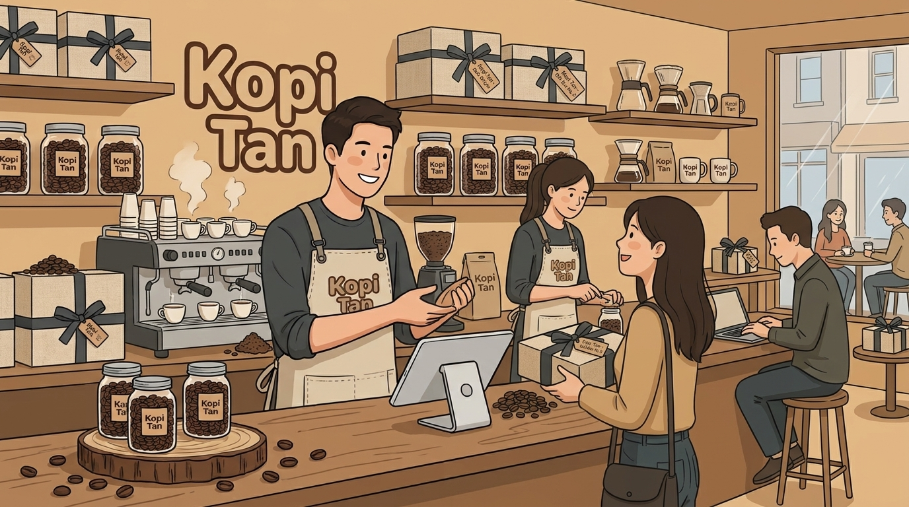
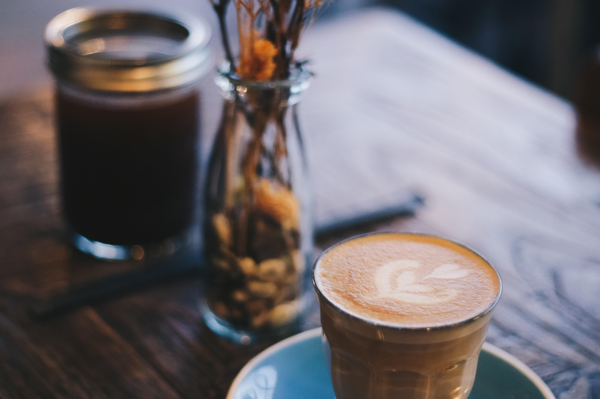

Tentang Kami
Dari satu meja kecil, untuk kopi lokal.
Kopi Tan adalah UMKM fiktif yang mengolah kopi lokal untuk kebutuhan pembelajaran. Idenya sederhana: kopi enak, harga ramah, dan proses yang jujur.


Dari meja kecil menjadi tempat favorit harian.
Kopi Tan dimulai dari meja kecil dengan satu mesin seduh dan beberapa resep andalan. Kami ingin kopi lokal terasa dekat: mudah dipesan, terjangkau, dan selalu disajikan dengan ramah.
Dari sana, daftar menu bertambah, tetapi prinsip kami tetap sama di setiap cangkir.
- Berdiri sejak
- 2024
- Menu andalan
- 12
- Petani mitra
- 5
- Pelanggan harian
- 100+
Biji kopi dan bahan asli dari petani sekitar.
Kami memilih biji kopi dari kebun lokal dan bekerja sama langsung dengan petani, sehingga rasa lebih autentik dan hasilnya kembali ke orang-orang yang menanamnya.
Proses sederhana dan transparan: dari biji, sangrai, seduh, sampai ke tangan pelanggan.
- Petik dan pilih biji
- Sangrai kecil-kecilan
- Seduh saat dipesan
Nilai yang Kami Bawa
-
Bahan lokal dari petani sekitar.
-
Proses sederhana dan transparan.
-
Pelayanan ramah untuk pelanggan harian.
Orang di Balik Kopi Tan
-
Fahdina
Pendiri · Peracik Kopi
Merancang resep dan memilih biji kopi untuk setiap menu.
-
Labib
Operasional
Mengatur pasokan bahan dan menjaga proses tetap rapi.
-
Citra
Pelayanan Pelanggan
Memastikan setiap pelanggan pulang dengan senyum.
Kopi lokal layak disajikan dengan bangga, satu cangkir untuk satu cerita.